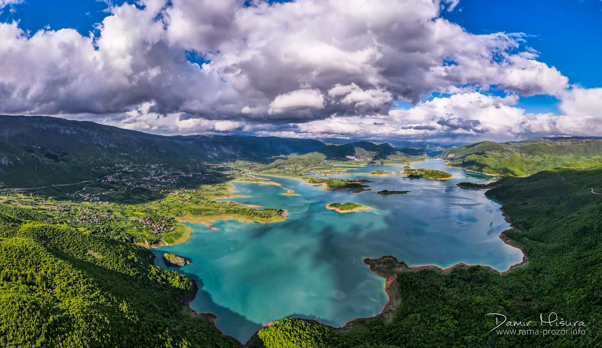

Kao što sam već spomenula, zovem se Ana Ivančević. Dolazim iz malenog mjesta u Hercegovini, Prozor-Rama, koje se nerijetko naziva pravim malim rajom. Da ne bude da iznosim činjenice koje nisu potkrijepljene dokazima donosim vam jednu od meni najdražih fotografija mojeg voljenog doma.
Osnovnu i srednju školu sam završila baš u ovom malenom raju. Još u osnovnoj školi rodila se moja ljubav prema pisanju i slikanju/crtanju. S obzirom na to da sam uvijek bila povučeno dijete to mi je postao najbolji i najlakši način izražavanja. Ali prije tih ljubavi postojala je jedna koja je na neki način zaslužna za ljubav prema pisanoj riječi; naime ljeta sam provodila čitajući, i ne samo ljeta. Na neki način nos nisam dizala iz knjige, jer kada jednom okusiš taj svijet; kada uđeš u njega, nema povratka. To je utjecalo na moju bujnu maštu i na ideju da započnem pisanje knjige, za koju se nadam da ću jednog dana objaviti, ali do tada zadovoljavam se objavljivanjem pjesama na društvenim mrežama. U nastavku vam donosim jednu od mojih nagrađivanih pjesama, i također jednu od omiljenih.
Uvijek sam zamišljao da će raj biti neka vrsta knjižnice. – Jorge Luis Borges
Ljudi mi često znaju reći da sam "prava umjetnička duša" koja nema mira i koja se mora okušati u mnogočemu, i moram priznati da ne griješe. Osim gore navedenih stvari koje su okupirale moj život, svirala sam u župnom tamburaškom sastavu sedam godina.
Da moja ljubav prema crtanju ne bude također tek pusta priča donosim vam neke od svojih radova i jedan intervju koji sam dala za mjesni internet portal.